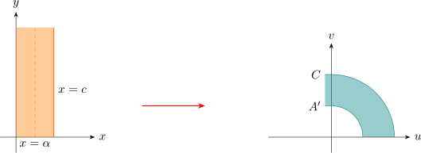
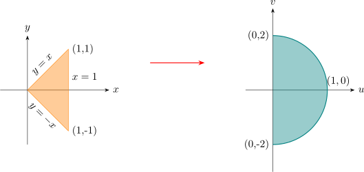

5.4 The Mapping \(w = z^c\)
Setting \(\hspace {0.2cm} w = \rho e^{i\phi }\hspace {0.2cm}\) and \(\hspace {0.2cm} z =re^{i\theta }\hspace {0.2cm}\) we get, for \(c\) real and \(+ve\), \begin {align*} \rho & = \left |w\right | = r^c \hspace {0.3cm} \text {and}\\\\ \phi & = c \hspace {0.1cm} Arg(z) + 2k\pi \\ & = c\theta + 2k\pi \hspace {0.1cm},\hspace {0.2cm} k\in \mathbb {Z}\hspace {0.1cm}, \hspace {0.2cm} \text {under the mapping}\hspace {0.2cm} w = z^c \end {align*}
This shows that when \(c\neq 1\), a non-uniform scale factor \( r^c\) is involved in the mapping, with magnification
when \(r> 1\) and contraction when \(r < 1\).
The ray \(\hspace {0.2cm} r> 0, \hspace {0.2cm} \theta = \theta _0\hspace {0.2cm}\) in the \(z-\)plane is mapped onto the ray \(\hspace {0.2cm} \rho = r^c\hspace {0.2cm}, \hspace {0.2cm} \phi = \phi _0 = c\theta _0\hspace {0.2cm}\) in the \(w-\)plane.
The function \(\hspace {0.2cm} w = z^c\hspace {0.2cm}\) with this gives valued function of the \(z-\)plane onto the \(w-\)plane for \( c > 1\), unless \(\theta \) is suitably
restricted.
Consider, for simplicity, \(c = 2\). The mapping \(\hspace {0.2cm} w = z^c\hspace {0.2cm}\) will then be
\[\boxed {\rho e^{i\pi } = r^2 e^{2i\theta }}\]
The image of the point \((r, \theta )\) in the \(z-\)plane is that point in \(w-\)plane with polar coordinates \(\hspace {0.2cm} (\rho , \phi ) = (r^2, 2\theta )\).
This shows that the first quadrant of the \(z-\)plane is mapped onto the entire upper half plane. For, first
quadrant is \(\hspace {0.2cm} 0 \leq \theta \leq \dfrac {\pi }{2}, \hspace {0.2cm} r> 0\hspace {0.2cm}\) and the upper half plane is defined by
\(\hspace {0.2cm} 0 \leq \dfrac {\phi }{2}\leq \dfrac {\pi }{2}\hspace {0.2cm}, \hspace {0.2cm} \rho = r^2 \)
\[\implies \hspace {0.4cm} 0 \leq \phi \leq \pi \hspace {0.2cm}, \hspace {0.3cm} \rho = r^2 > 0\]
circles about the origin, \(r = r_0\) are transformed into circles \(\rho = r^2\) in the \(w-\)plane.
The semicircular region \(r = r_0, \hspace {0.2cm} 0\leq \theta \leq \pi \hspace {0.2cm}\) is mapped into the circular region \(\hspace {0.2cm} \phi = r^2_0\).
In Cartesian form, set \(\hspace {0.2cm} w = u + iv\hspace {0.2cm}\) and \(\hspace {0.2cm} w = z^2,\hspace {0.2cm} \) we have \(\hspace {0.2cm} u = x^2 - y^2\hspace {0.2cm} , \hspace {0.2cm} v = 2xy\)
Hence the hyperbolas \(\hspace {0.2cm} x^2 - y^2 = c\) and \(\hspace {0.2cm} 2xy = d\hspace {0.2cm}\) are mapped by \(\hspace {0.2cm} w = z^2\hspace {0.2cm}\) into straight line \(\hspace {0.2cm} u = c \hspace {0.2cm}\) and \(\hspace {0.2cm} v = d\).
One fact is that when \(c\) and \(d\) are not zero, the hyperbolas intersect at right angles, just their
images.
Example
Find the image of the vertical strip \(\hspace {0.2cm} 0\leq x \leq c\hspace {0.2cm}, \hspace {0.2cm} y\leq 0\hspace {0.2cm}\) under the map \(\hspace {0.2cm} w = z^2\).
Solution
Let \(\hspace {0.2cm} x = \alpha \hspace {0.2cm}, \hspace {0.2cm} 0 < \alpha < c\hspace {0.2cm}\) be a line in the region and let \((\alpha ,y)\) be a movable point on the line \(\hspace {0.2cm} x = \alpha \).
The image of this point is given by the relations \(\hspace {0.2cm} u = \alpha ^2 - y^2\hspace {0.2cm}, \hspace {0.2cm} v = 2\alpha y \hspace {0.2cm}, \hspace {0.2cm} y\leq 0\).
Eliminating \(\hspace {0.2cm} y\) , get \(\hspace {0.2cm} v^2= -4\alpha ^2 (u- \alpha ^2)\).
This is an equation of a parabola, vertex at \((\alpha ^2, 0)\) and focus at the origin.
Since \(v\) increases as \(y\) increases, the point \((\alpha , y)\) moves upwards on the line \( x = \alpha \) and the image point moves left on
the curve \(A'\).
The image of \(x = c\) is the curve \(c\).

Further, the image of the line \(x = 0\), \(\hspace {0.2cm} y \leq 0\) of the region is found to be \(u = -y^2\hspace {0.2cm},\hspace {0.2cm} v = 0\).
This means that the negative real axis, the image of the positive \(y-\)axis in the \(z-\)plane.
Example
Show that the image of the closed triangular region formed by the lines \(\hspace {0.2cm} y = \pm x\hspace {0.2cm}\) and \(\hspace {0.2cm} x = 1\hspace {0.2cm}\) is the closed parabolic
region bounded by the segment \(\hspace {0.2cm} -2\leq v \leq 2\hspace {0.2cm}\) of the \(v-\)axis on the right portion of a parabola \(\hspace {0.2cm} v^2 = -4(u - 1)\hspace {0.2cm}\) under the map
\(\hspace {0.2cm} w = z^2\).
Solution
We have \(\hspace {0.2cm} u = x^2 -y^2,\hspace {0.3cm} v = 2xy\)
- 1.
- The line \(\hspace {0.2cm} y = x\hspace {0.2cm} , \hspace {0.2cm} 0 \leq y \leq 1\hspace {0.2cm}\) is mapped on \( u = 0\) and \(v = 2y^2\) and the point \((1,1)\) is mapped onto \((0,2)\).
- 2.
- The line \(\hspace {0.2cm} y = -x\hspace {0.2cm} , \hspace {0.2cm} -1\leq y \leq 0\hspace {0.2cm}\) is mapped onto \(\hspace {0.2cm} u = 0, \hspace {0.2cm} v = -2y^2\hspace {0.2cm}\) and the point \((1,-1)\) is mapped to \((0,-2)\).
- 3.
- The line \(\hspace {0.2cm} x = 1\hspace {0.2cm}\) is mapped on \(\hspace {0.2cm} v^2 = -4(u - 1)\hspace {0.2cm}\) a parabola with vertex \((1,0)\) and focus at the origin. The parabola
meets the line \(u = 0\) at \((0,2)\) and \((0,-2)\).

Exercise
Find the image of the given set under the mapping \(\hspace {0.2cm} w = z^2\hspace {0.2cm}\). Draw the set and its image in there respective
planes
- 1.
- \(\hspace {0.2cm} arg z = \dfrac {\pi }{3}\)
- 2.
- \(\hspace {0.2cm} arg z = \dfrac {-3\pi }{4}\)
- 3.
- \(\hspace {0.2cm} y = -\dfrac {1}{4}\)
- 4.
- \(\hspace {0.2cm} x = 0 \hspace {0.2cm}, \hspace {0.2cm} y > 0\)
- 5.
- \(\hspace {0.2cm} \) the circular arc \(\left |z\right | = \dfrac {4}{3}\)
- 6.
- \(\hspace {0.2cm}\) The triangle with vertices 0 , \(\hspace {0.2cm} 1 + 2i\hspace {0.2cm}\) and \(\hspace {0.2cm} -1 + 2i\).
- 7.
- \(\hspace {0.2cm}\) The triangular region bounded by \(\hspace {0.2cm} x = 1, \hspace {0.2cm} y = 1\hspace {0.2cm}\) and \(\hspace {0.2cm} x + y = 1\)
- 8.
- \(\hspace {0.2cm} 1\leq \left |z\right |\leq 2\hspace {0.3cm},\hspace {0.3cm} \dfrac {\pi }{4}\leq \operatorname {arg}(z)\leq \dfrac {3\pi }{4}\)
Questions on this section
Stuck on something here? Ask below and it stays attached to this topic.